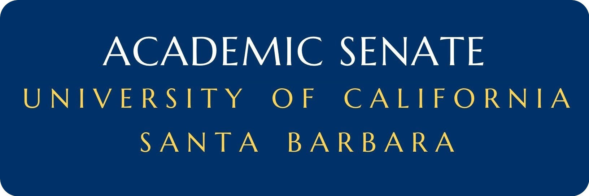
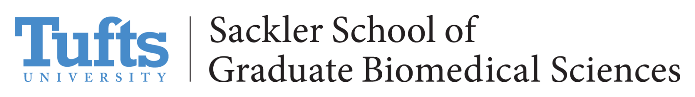

Heather  MacGregor
MacGregor
Education
University of California, Santa Barbara |
09/2016 - 07/2020 |
| B.S. Biochemistry |
| GPA 3.8 of 4.0 |
Ponderosa High School |
08/2012 - 05/2016 |
| High School Diploma |
Research Experience
University of California, Santa Barbara |
03/2018 - |
| Project: | Quantum Mechanical Calculations of Vibrational Circular Dichroism Spectra |
| Principal Investigator: | Kalju Kahn |
|
| Financial Support: |
|
|
|
|
 |
University of California, Santa Barbara |
09/2019 - |
| Project: | Arable Sensors |
| Principal Investigator: | Katja Seltmann, Katherine Esau Director |
| Supervisor: | Ryan Clark, Monitoring Coordinator |
|
| Financial Support: |
|
Tufts School of Graduate Biomedical Sciences |
05/2019 - 08/2019 |
| Project: | Feeding State Dependency of the Ventromedial Hypotdalamus |
| Principal Investigator: | Maribel Rios, Associate Professor of Neuroscience |
|
| Financial Support: |
|
|
 |
University of California, Santa Barbara |
09/2016 - 03/2017 |
| Project: | Manzanita and San Clemente Restoration |
| Supervisor: | Andy Lanes, Restoration Coordinator |
|
Publications & Media
- Benchmarking Density Functional Methods for Prediction of Gas-Phase Vibrational Circular Dichroism Spectra. H. R. MacGregor, K. Kahn. In Preparation. (2019)
- Gaucho Summer Experience Spotlight: Heather MacGregor. UC Santa Barbara Career Services Blog. (2019)
Grants & Fellowships
Undergraduate Research Internship Grant |
09/2019 |
| UC Santa Barbara, Cheadle Center for Biodiversity and Ecological Restoration |
Axline Summer Undergraduate Research Fellowship |
08/2019 |
| UC Santa Barbara, College of Creative Studies & the Axline Family |
Building Diversity in Biomedical Sciences Summer Research Program |
05/2019 - 08/2019 |
| Tufts University, Sackler School of Graduate Biomedical Sciences | |
| NIH Award #R25HL007785 |
Cooperative International Science and Engineering Internship* |
05/2019 |
| Eindhoven University of Technology & UC Santa Barbara | |
| Materials Research Laboratory & NSF REU |
Gorman Scholars Program* |
05/2019 |
| UC Santa Barbara, Center for Science and Engineering Partnerships & the Gorman Family |
Partnership for Research and Education in Materials Internship* |
05/2019 |
| University of Texas El Paso & Materials Research Laboratory, UC Santa Barbara |
Edison Summer Research Program |
06/2018 |
| UC Santa Barbara, McNair Scholars Program & Edison International | |
Honors &
Awards
Diversity in Graduate Studies (DIGS) Visitation Program* |
11/2019 |
| Office of Graduate Admissions, Rensselaer Polytechnic Institute |
Purdue Graduate Diversity Visitation Program |
11/2019 |
| Office of Graduate Diversity, Purdue University |
The Pennsylvania State University STEM Fall Open House |
10/2019 |
| Office of Graduate Educational Equity Programs, Penn State University Park |
Undergraduate Student Travel Award |
09/2019 |
| Annual Biomedical Research Conference for Minority Students |
Edison GRE Preparation Course Scholarship |
04/2019 |
| McNair Scholars Program, UC Santa Barbara | |
| Edison International |
Director's Award |
05/2016 |
| Ponderosa High School Music Program |
Work Experience
University of California, Santa Barbara - Department of Chemistry and Biochemistry Research Storeroom |
11/2018 - |
| Title: Storeroom Assistant |
| Supervisor: Adrian Shelor |
|
University of California, Santa Barbara - Disabled Students Program |
11/2016 - |
| Title: Notetaker and Exam Proctor |
| Supervisor: Amanda Kato |
|
Outreach & Societies
Women in Science and Engineering (WiSE) Mentorship Program |
09/2019 - |
|
Biology Mentoring and Engagement |
09/2019 - |
|
SciTrek |
01/2019 - |
|
College of Creative Studies Peer Mentorship Program |
09/2017 - |
|
American Physical Society Conference for Undergraduate Women in Physics |
01/2019 - |
|
American Society for Biochemistry and Molecular Biology (Board Member) |
09/2018 - |
|
Residence Hall Association |
09/2016 - 06/2017 |
|